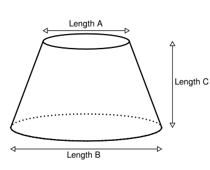
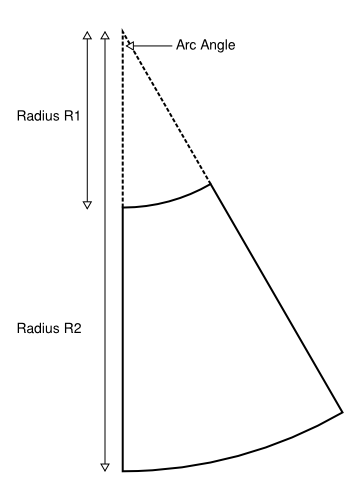

<style type="text/css">
  .diagram       { float: right; }
  .input_fields  { float: left; }
  .input_fields label { font-weight: bold; }
  .output_fields { float: left; margin-top: 100px; }
</style>

<section id="wrapper" style="margin-top: 60px;">

  <p>Calculates the measurements for the pattern to construct a flat top cone.</p>

  

  <form class="input_fields">
    <p><label for="length_a">Length A</label><input type="text" name="length_a" id="length_a" value="30"/> <small>(mm)</small></p>
    <p><label for="length_b">Length B</label><input type="text" name="length_b" id="length_b" value="50"/> <small>(mm)</small></p>
    <p><label for="length_c">Length C</label><input type="text" name="length_c" id="length_c" value="50"/> <small>(mm)</small></p>
    <p><input type="button" value="Calculate" onclick="doCalculation()"/></p>
  </form>

  <hr style="clear:both;" />

  

  <div class="output_fields">
    <p><strong class="label">Arc Angle</strong> = <span class="value" id="arc_angle">_</span> <small>(degrees)</small></p>
    <p><strong class="label">Radius R1</strong> = <span class="value" id="radius_r1">_</span> <small>(mm)</small></p>
    <p><strong class="label">Radius R2</strong> = <span class="value" id="radius_r2">_</span> <small>(mm)</small></p>
  </div>

  <hr style="clear:both;" />

</section>

<script type="text/javascript">

  // Form submit handler
  function doCalculation(){

    // Inputs
    var length_a = document.getElementById('length_a').value,
        length_b = document.getElementById('length_b').value,
        length_c = document.getElementById('length_c').value;
    console.log('Length A: ' + length_a);
    console.log('Length B: ' + length_b);
    console.log('Length C: ' + length_c);

    // Outputs
    var radius_r1 = document.getElementById('radius_r1'),
        radius_r2 = document.getElementById('radius_r2'),
        arc_angle = document.getElementById('arc_angle');
    
    // Scale ratio between circles
    var scale_ratio = 0.5 * ( ( length_b - length_a ) / length_a );
    console.log( 'Scale Ratio: ' + scale_ratio );

    // Small triangle sides
    var a = length_c,
        o = 0.5 * ( length_b - length_a ) 
        h = Math.sqrt( a*a + o*o );
    console.log( 'Side O: ' + o + ' Side A: ' + a + ' Side H: ' + h );

    // Circle Radii
    var r1 = h * scale_ratio,
        r2 = h + (h * scale_ratio);
    radius_r1.innerHTML = round(r1);
    radius_r2.innerHTML = round(r2);

    // Arc Ratio is arc length / circumference
    var arc_ratio = (Math.PI * r1) / (Math.PI * length_a);
    console.log('Arc Ratio: ' + arc_ratio);

    // Arc Angle in degrees
    arc_angle.innerHTML = round(arc_ratio * 360);
  }

  function round(n){
    return Math.round(n*Math.pow(10,2))/Math.pow(10,2);
  }

</script>